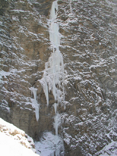

Canadian Rockies
Popes Peak - first complete ski descent
Climbing and skiing, together at last. The first complete descent of the north face of Popes Peak
The hanging basin below the north face of Popes Peak has always been an attraction to skiers for it's multitude of steep couloirs. However two pitches of ice and mixed climbing through the seracs had prevented skiers from making the complete descent of Popes' north face from the summit. It was mid April 2007 when Chris Brazeau and I set out for this coveted prize. At the top of the main couloir (which is classic on its own), Chris led a 15 meter pitch of water ice 3. With no possibilities for an anchor at the top, we simulclimbed the 55 degree hanging snow slope above until an ice anchor was available in the hanging serac. I took the next lead which involved a couple of body lengths of awkward M4. I had to turn my torso sideways so my ski tips didn't but into the severely overhanging seracs. I belayed Chris up on an ice screw anchor, we stashed the cord, and kicked steps and skinned to the summit. We enjoyed a spectacular 360 degree view in beautiful spring sunshine before shredding the cold smoke that awaited us below. On the way down, we rappeled both climbing pitches off a v-thread and a massive bollard, and made it back to the car without incident. We only carried three ice screws and wished we had more. Now i can't wait to hit the lines I on Mt. Narao, Popes' neighbour!

Mt Alberta North Face
Blaeberry Express
Blaeberry Express - Hepberg Creek, Blaeberry Valley B.C. GR975035 220 m M6 WI 6 - F.A. Rich Marshall, Jon Walsh - Dec 1, 2005
